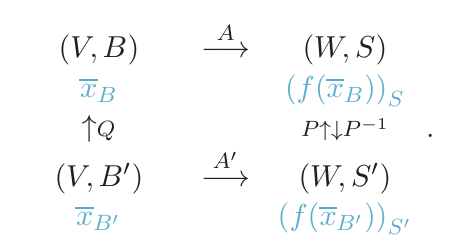
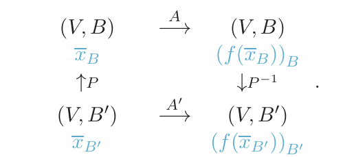

Relaciones de equivalencia
Cómo «clasificar» objetos que comparten una cualidad (relaciones de equivalencia y clases) y, en concreto, cómo clasificar matrices: equivalentes ($B=MAN$, las que tienen el mismo rango), congruentes ($B=P^tAP$) y semejantes ($A'=P^{-1}AP$, las que representan el mismo endomorfismo en bases distintas). Es la base de todo el módulo 4: diagonalizar es buscar, en la clase de semejanza de una matriz, una diagonal.
0Antes de empezar U p.141
Clasificar es agrupar «lo que es lo mismo desde cierto punto de vista»: los alumnos por curso, las palabras por su letra inicial, los números por su paridad. Una relación de equivalencia es la regla matemática de esa clasificación. Aplicada a matrices da tres clasificaciones: por rango (equivalentes), por forma bilineal (congruentes) y por endomorfismo (semejantes). Dos matrices semejantes son «la misma aplicación vista con gafas distintas»; por eso comparten determinante, traza y valores propios.
Qué necesitas saber ya
- Del tema 1.2: producto de matrices, matriz inversa, matriz regular, rango.
- Del tema 1.3: $\det(AB)=\det A\det B$, $\det A^t=\det A$, $A$ regular $\iff\det A\neq0$ (U p.26-27).
- Del tema 3.5: al cambiar las bases de una aplicación lineal, $A'=P^{-1}AQ$ (Def. 3.15, U p.136); en un endomorfismo ($Q=P$) queda $Q^{-1}AQ$ (tema 3.5). En el 4.1 esa misma matriz de paso se llama $P$.
Mapa del tema
| Apartado | Qué contiene | Dónde |
|---|---|---|
| 1 Relaciones binarias | Def. 4.1, reflexiva / simétrica / transitiva | U p.141-143 |
| 2 Relación de equivalencia | Def. 4.2, clases, partición, conjunto cociente | U p.144-145 |
| 3 Matrices equivalentes | Def. 4.3, Teor. 4.1-4.3, rango como invariante completo | U p.145-147 · L §1.1 p.6, §5.2 p.277 |
| 4 Congruentes y semejantes | Def. 4.4, Def. 4.5, jerarquía, diagrama del cambio de base | U p.147-148 · L §5.2 p.277, §5.4 p.291-292 |
| 5 Invariantes | Cómo probar que dos matrices no son semejantes | U p.153 (adelanto) · L p.277 |
| 6 Tabla Lay ↔ U | Vocabulario que no coincide | L |
| 7 Ejercicios del libro | E 4.1–4.10 + 9 ejemplos propios + autoevaluación | E pp.120-128 |
| 8 Ejemplos de examen | 4 apartados nuevos y enlaces a los ya resueltos | X |
(a) Comprobar si una relación dada es reflexiva, simétrica, transitiva, y hallar sus clases (E 4.1-4.3, X «definir relación de equivalencia»). (b) Decidir si dos matrices son equivalentes (¿mismo rango?), congruentes o semejantes, casi siempre con invariantes (determinante, traza) para descartar (E 4.4-4.7). (c) Hallar la matriz de paso $P$ planteando $PA=BP$ (E 4.6-4.9). (d) Verdadero/falso de teoría: «¿qué relación verifican las matrices de un endomorfismo?» (semejantes), «¿congruentes tienen el mismo determinante?» (no).
- U dice «es evidente» en varios sitios: que la equivalencia de matrices es relación de equivalencia (p.146) y que congruentes $\Rightarrow$ equivalentes (p.147); además presenta la congruencia como relación de equivalencia sin prueba. Aquí se demuestran la congruencia (Def. 4.4) y la semejanza (X Sept. 2019).
- E 4.9 (p.126): «pueden ser semejantes porque $\operatorname{rang}\Lambda=\operatorname{rang}A$» es solo una condición necesaria; y en p.127 escribe «rang$(A)$ = rang$(B)$» donde debe decir rang$(\Lambda)$.
- E 4.10 (p.128): el elemento $(2,3)$ de $A^{15}$ está impreso como $-2^{29}$; es $+2^{29}$ (la conclusión D no cambia). Y la $P$ usada no es «el doble» de la de 4.9 (difieren en el signo de la 3.ª columna), aunque también vale.
- E 4.8 y 4.7 no tienen errata (el texto digital del libro pierde los signos $\neq$; en el libro impreso las opciones son correctas).
- X Feb. 2018 (A) ej. 4: la solución oficial («equivalentes; semejantes a una diagonal») es correcta pero imprecisa. X Feb. 2024 (1.ª) preg. 6 (tema 6): la oficial confunde semejante con congruente (ver apartado 5).
- Convenio de este resumen (coherente con el 3.5): $x_B=Q\,x_{B'}$ y $A'=P^{-1}AQ$; en un endomorfismo $Q=P$ y $A'=P^{-1}AP$. Con la Def. 4.3 de U, $M=P^{-1}$ y $N=Q$.
1Relaciones binarias U p.142-143
Una relación es una lista de las parejas «ordenadas» $(a,b)$ para las que se cumple cierta frase: «$a$ empieza por la misma letra que $b$», «$a$ es menor que $b$». Se puede dibujar como un grafo de flechas: un punto por elemento, una flecha $a\to b$ por cada pareja $(a,b)$ y un lazo (flecha de $a$ a $a$) por cada pareja $(a,a)$.
Una relación binaria $R$ en un conjunto $A\neq\emptyset$ es un subconjunto no vacío del producto cartesiano $A\times A$. Si $(a,b)\in R$ se escribe $aRb$ y se dice que «$a$ está relacionado con $b$».
U p.142$A=\{\text{casa, mesa, mono, silla, mantel, cosa}\}$ y $R$: «empezar por la misma letra». $A\times A$ tiene $6\cdot6=36$ pares, pero solo 14 están en $R$ (p. ej. $(\text{mesa},\text{mono})$, $(\text{silla},\text{silla})$; $(\text{mesa},\text{silla})\notin R$).
U p.142| Propiedad | Se escribe | En el grafo de flechas |
|---|---|---|
| Reflexiva | $aRa$ para todo $a\in A$ | todo punto tiene lazo |
| Antirreflexiva | $a\not R a$ para todo $a$ | ningún punto tiene lazo |
| Simétrica | $aRb\Rightarrow bRa$ | cada flecha de ida tiene su vuelta |
| Antisimétrica | $aRb$ y $bRa\Rightarrow a=b$ | ninguna flecha (entre puntos distintos) tiene vuelta |
| Transitiva | $aRb$ y $bRc\Rightarrow aRc$ | cada cadena $a\to b\to c$ tiene su «atajo» $a\to c$ |
Confundir «simétrica» con «antisimétrica» (no son opuestas: «=» es ambas). Y «probar» una propiedad con ejemplos: para afirmar que una relación es transitiva hay que revisar todas las cadenas; para negarla basta un contraejemplo.
2Relación de equivalencia, clases y conjunto cociente U p.144-145
Una relación $R$ en $A$ es de equivalencia si es reflexiva, simétrica y transitiva.
Entonces $A$ se divide en conjuntos disjuntos formados por elementos relacionados entre sí: las clases de equivalencia. La clase de $a$ es $[a]=\{x\in A : xRa\}$ y $a$ es su representante. El conjunto de todas las clases es el conjunto cociente $A/R$.
U p.144$A=\{\text{uno, dos, tres, eva}\}$ y $R$: «tiene el mismo número de letras». $R$ tiene 10 pares: los lazos de las 4 palabras y los 6 pares ordenados entre uno, dos, eva. Es reflexiva (4 lazos), simétrica (las flechas van en parejas) y transitiva, luego es de equivalencia. Clases: $\{\text{uno, dos, eva}\}$ (3 letras) y $\{\text{tres}\}$ (4 letras); $A/R=\{\text{Clase 1},\text{Clase 2}\}$. U (Ej. 4.5) comenta que una imagen digital es una matriz de píxeles y una clase puede ser un grupo de píxeles contiguos del mismo color.
U p.144-145Cada elemento está en su propia clase (reflexiva); si $a$ está relacionado con $b$ entonces las clases de $a$ y $b$ coinciden (simétrica + transitiva); y dos clases distintas no comparten ningún elemento. Es como repartir a los alumnos en clases: nadie queda sin clase y nadie está en dos. Recíprocamente, toda partición de $A$ define una relación de equivalencia («estar en el mismo trozo»).
propioSi la relación se puede escribir como «$f(x)=f(y)$» para alguna cantidad $f$ (la paridad, el número de letras, el rango, el resto al dividir entre 3…; ver el ejemplo propio 2), es siempre de equivalencia, y las clases son los conjuntos donde $f$ vale lo mismo. Ejemplo: en $\mathbb Z$, «$x-y$ múltiplo de 3» $\iff$ mismo resto módulo 3: tres clases $[0],[1],[2]$.
propioOlvidar que la reflexividad exige todos los lazos: «$a\le b$» es reflexiva y transitiva pero no simétrica ($1\le2$, $2\not\le1$); no es de equivalencia. Y una relación sin lazos en algún elemento (como $R$ en E 4.1) no es reflexiva por muy «bonita» que parezca.
3Matrices equivalentes: el rango lo decide todo U p.145-147
Las operaciones elementales por filas (tema 1.2) no cambian el rango. Si además se permiten operaciones por columnas, cualquier matriz se reduce a la forma $\begin{pmatrix}I_r&0\cr0&0\end{pmatrix}$, donde $r$ es el rango. Dos matrices del mismo tamaño que se reducen a la misma forma son «la misma cosa» para esta relación. Por eso la relación de equivalencia de matrices solo mira el rango.
$B$ es equivalente a $A$ si existen dos matrices regulares $M$ y $N$ tales que $$B=MAN.$$ $M$ y $N$ son independientes entre sí (y de tamaños $m\times m$ y $n\times n$ si $A$ es $m\times n$). Es una relación de equivalencia (reflexiva: $M=N=I$; simétrica: $A=M^{-1}BN^{-1}$; transitiva: el producto de regulares es regular).
U p.146- Teor. 4.1. Si $A=CB$ con $C$ regular (mismo orden), entonces $A$ y $B$ tienen el mismo rango. Idea de la prueba: las filas de $A$ son combinaciones lineales de las de $B$, luego $\operatorname{rang}A\le\operatorname{rang}B$; y como $B=C^{-1}A$, vale también $\operatorname{rang}B\le\operatorname{rang}A$.
- Teor. 4.2. Mismo rango $\iff$ equivalentes (para matrices del mismo tamaño).
- Teor. 4.3 (enunciado literal de U): «Las matrices asociadas a un endomorfismo en diferentes bases son equivalentes». El diagrama y la prueba valen para cualquier aplicación lineal $f:V\to W$ con bases independientes en salida y llegada: $A'=P^{-1}AQ$ es la Def. 4.3 con $M=P^{-1}$ y $N=Q$.

En $\mathcal M_{2\times3}(\mathbb R)$ se define $A\sim B$ si son equivalentes. Por el Teor. 4.2, $A\sim B\iff\operatorname{rang}A=\operatorname{rang}B$, y el rango puede valer $0,1,2$ (no supera $\min(2,3)$): 3 clases, con representantes $$\begin{pmatrix}0&0&0\cr0&0&0\end{pmatrix},\quad\begin{pmatrix}1&0&0\cr0&0&0\end{pmatrix},\quad\begin{pmatrix}1&0&0\cr0&1&0\end{pmatrix}.$$ La matriz $C=\begin{pmatrix}1&2&3\cr2&4&6\end{pmatrix}$ tiene $F_2=2F_1$ y $C\neq0$: rango 1, luego está en la clase del segundo representante. Con la animación puedes comprobar cómo el escalonado detecta ese rango.
En Lay, «equivalentes por filas» (§1.1, p.6) significa que una matriz se obtiene de otra por operaciones de fila, es decir $B=EA$ con $E$ regular (§5.2, p.277, Advertencia 2): es el caso particular $N=I$ de la Def. 4.3. Esa relación conserva más cosas (el espacio de filas, las soluciones del sistema homogéneo $Ax=0$ y las del sistema de matriz ampliada dada). La equivalencia de U (Def. 4.3) permite además operar por columnas y solo conserva el rango. Ver el apartado 6 y la sección de invariantes.
L §1.1 p.6 · §5.2 p.2774Congruentes y semejantes U p.147-148
Una misma matriz cuadrada puede ser (i) una aplicación lineal $V\to W$ con bases independientes en salida y llegada (se cambia por $P^{-1}AQ$, equivalencia), (ii) un endomorfismo $V\to V$ con una sola base (se cambia por $P^{-1}AP$, semejanza), o (iii) una forma bilineal (tema 6: se cambia por $P^tAP$, congruencia). Cada contexto reparte los cambios de base de forma distinta y por eso conserva cosas distintas.
$B$ es congruente con $A$ si existe una matriz regular $P$ tal que $B=P^tAP$. Si $A$ y $B$ son congruentes, son cuadradas, equivalentes ($M=P^t$, $N=P$) y tienen el mismo rango.
Es relación de equivalencia (U no lo prueba): reflexiva, $A=I^tAI$; simétrica, de $B=P^tAP$ se despeja $A=(P^{-1})^tBP^{-1}$ (pues $(P^t)^{-1}=(P^{-1})^t$), con $P^{-1}$ regular; transitiva, si $B=P^tAP$ y $C=S^tBS$ entonces $C=(PS)^tA(PS)$ con $PS$ regular.
U p.147Cuando $f:V\to V$ es un endomorfismo, el espacio de salida y el de llegada son el mismo y se cambia la base a la vez en los dos ($Q=P$): la fórmula $A'=P^{-1}AQ$ pasa a $A'=P^{-1}AP$. $A'$ es semejante a $A$ si existe una matriz regular $P$, llamada matriz de paso, con $$A'=P^{-1}AP.$$ Las matrices asociadas a un endomorfismo en bases diferentes son semejantes. La semejanza es relación de equivalencia (demostración en X Sept. 2019).
U p.148
$f(x,y)=(x+y,\,2y)$ tiene en la base canónica $A=\begin{pmatrix}1&1\cr0&2\end{pmatrix}$. En la base $B'=\{(1,1),(0,1)\}$: $f(1,1)=(2,2)=2(1,1)+0(0,1)$ y $f(0,1)=(1,2)=1(1,1)+1(0,1)$, luego $A'=\begin{pmatrix}2&1\cr0&1\end{pmatrix}$. Y en efecto, con $P=\begin{pmatrix}1&0\cr1&1\end{pmatrix}$ (columnas = $B'$ en la canónica), $P^{-1}AP=\begin{pmatrix}1&0\cr-1&1\end{pmatrix}\begin{pmatrix}1&1\cr0&2\end{pmatrix}\begin{pmatrix}1&0\cr1&1\end{pmatrix}=\begin{pmatrix}2&1\cr0&1\end{pmatrix}$ ✓. Las dos matrices tienen determinante $2$, traza $3$ y polinomio característico $\lambda^2-3\lambda+2$. En la base de vectores propios $\{(1,0),(1,1)\}$ la matriz sería $\operatorname{diag}(1,2)$ (tema 4.3).
propio$$\text{semejantes}\ (B=P^{-1}AP)\ \Longrightarrow\ \text{equivalentes}\ (B=MAN)\ \Longleftarrow\ \text{congruentes}\ (B=P^tAP).$$ Basta tomar $M=P^{-1},N=P$ en el primer caso y $M=P^t,N=P$ en el segundo. Ninguna flecha se puede invertir, y semejantes y congruentes no se implican entre sí:
| Afirmación falsa | Contraejemplo | Por qué |
|---|---|---|
| equivalentes $\Rightarrow$ semejantes | $\begin{pmatrix}1&2\cr3&4\end{pmatrix}$ y $\begin{pmatrix}5&6\cr7&8\end{pmatrix}$ | mismo rango (2) y mismo det ($-2$), pero trazas $5\neq13$ |
| congruentes $\Rightarrow$ semejantes | $I_2$ y $\begin{pmatrix}4&0\cr0&1\end{pmatrix}=P^tIP$, $P=\operatorname{diag}(2,1)$ | $\det$ distinto ($1\neq4$): $|P^tAP|=|P|^2|A|$ |
| semejantes $\Rightarrow$ congruentes | $D=\begin{pmatrix}1&0\cr0&2\end{pmatrix}$ y $B=\begin{pmatrix}1&3\cr0&2\end{pmatrix}$: con $P=\begin{pmatrix}1&3\cr0&1\end{pmatrix}$, $P^{-1}BP=D$ | semejantes, pero no congruentes: si $A$ es simétrica, $(P^tAP)^t=P^tA^tP=P^tAP$ también lo es, y $B$ no |
Cuándo coinciden: si $P$ es ortogonal ($P^t=P^{-1}$, tema 5.2), $P^{-1}AP=P^tAP$: la matriz es a la vez semejante y congruente (U Teor. 5.8, p.224).
U p.146-148 propioCambia $A$ y $Q$ (la matriz de paso, regular) y compara: la semejanza $Q^{-1}AQ$ conserva determinante y traza; la congruencia $Q^tAQ$ multiplica el determinante por $(\det Q)^2$. Prueba «Q singular» para ver que la matriz de paso debe ser regular. Aquí Q = P, la matriz de paso de la Def. 4.5.
P$A=\begin{pmatrix}1&2\cr2&-2\end{pmatrix}$ y $P=\begin{pmatrix}2&-1\cr1&2\end{pmatrix}$ ($\det P=5\neq0$; columnas ortogonales pero no unitarias). Semejanza: $P^{-1}AP=\operatorname{diag}(2,-3)$. Congruencia: $P^tAP=\operatorname{diag}(10,-15)$. Mismas matrices de partida y de paso, resultados distintos: no se pueden confundir (verificado con sympy).
propio5Invariantes: cómo probar que dos matrices NO son semejantes U p.153 · L p.277
Un invariante es una cantidad que no cambia al pasar de una matriz a otra de su clase. Si dos matrices tienen un invariante distinto, no pueden estar en la misma clase: es la forma más rápida de descartar. Pero que coincidan los invariantes no prueba nada (es solo condición necesaria): para afirmar la semejanza hay que dar la matriz de paso.
| Invariante | Semejantes | Congruentes | Equivalentes |
|---|---|---|---|
| Rango | sí | sí | sí (es el invariante completo) |
| Determinante | sí: $|P^{-1}AP|=|A|$ | no: $|P|^2|A|$ (se conserva el signo y si es 0) | no |
| Traza, polinomio característico, valores propios | sí (U Teor. 4.4, p.153) | no | no |
Si $A'=P^{-1}AP$: $\operatorname{rang}A'=\operatorname{rang}A$, $\det A'=\det A$ (porque $|P^{-1}||A||P|=|A|$, con $|P^{-1}|=1/|P|$), y mismo polinomio característico, luego misma traza y mismos valores propios (U p.153, Teor. 4.4; Lay §5.2 Teor. 4, p.277; se estudian en el tema 4.2). Por ejemplo, una matriz de orden $n$ semejante a $\operatorname{diag}(\lambda_1,\dots,\lambda_n)$ tiene determinante $\lambda_1\cdots\lambda_n$ y traza $\lambda_1+\dots+\lambda_n$.
U p.26, 153 L §5.2 p.277- Compara rango, determinante, traza (y, de orden 2, el polinomio $\lambda^2-\operatorname{tr}\lambda+\det$). Si alguno difiere: no semejantes. Fin.
- Si coinciden todos, no puedes concluir. Plantea $PB=AP$ (sistema lineal en las entradas de $P$: no hace falta $P^{-1}$).
- Resuelve y exige $\det P\neq0$. Si no hay solución regular, no son semejantes; si la hay, esa $P$ es la matriz de paso (nunca es única: $kP$ también sirve).
$J=\begin{pmatrix}1&1\cr0&1\end{pmatrix}$ e $I$ tienen el mismo rango (2), determinante (1), traza (2) y polinomio característico $(1-\lambda)^2$. Pero $P^{-1}IP=I\neq J$ para toda $P$: no son semejantes (la única matriz semejante a $I$ es $I$; en general, $\lambda I$ solo es semejante a sí misma). Lay (§5.2 p.277, Advertencia 1) avisa de lo mismo con $\begin{pmatrix}2&1\cr0&2\end{pmatrix}$ y $2I$ (mismos valores propios, no similares): es el mismo fenómeno que $J$ e $I$, desplazado por $2$. Lo que falta lo dan la diagonalización y las matrices de Jordan (temas 4.3-4.4).
L §5.2 p.277 propioEn Feb. 2024 (1.ª sem.), pregunta 6 (tema 6), la solución oficial toma $A=\begin{pmatrix}1&2\cr2&-2\end{pmatrix}$ y la base $\{(2,1),(-1,2)\}$ (matriz de paso $P=\begin{pmatrix}2&-1\cr1&2\end{pmatrix}$, no ortogonal) y afirma que la forma cuadrática pasa a $2x_1'^2-3x_2'^2$. Pero $P^{-1}AP=\operatorname{diag}(2,-3)$ (semejanza) mientras que la forma cuadrática cambia por congruencia: $P^tAP=\operatorname{diag}(10,-15)$. Solo con $P$ ortogonal (columnas normalizadas) coinciden. Se desarrolla en el tema 6.
X Feb. 2024 (1.ª) P66Tabla de correspondencia Lay ↔ U L §5.2, §5.4, §7.2
Lay no tiene una sección equivalente a §4.1: aparece la semejanza dentro de valores propios. Úsalo para repasar la idea; manda U en notación y alcance.
| Concepto | U | Lay |
|---|---|---|
| Semejanza $A'=P^{-1}AP$ | «semejantes», $P$ = matriz de paso (Def. 4.5, p.148) | «similares»; $P^{-1}AP=B$, «transformación de similitud» (§5.2 p.277) |
| Misma aplicación, otra base | matrices de un endomorfismo en bases distintas (p.148) | $[T]_{\mathcal B}=P^{-1}AP$ (§5.4 p.291-292); «el conjunto de las matrices similares a $A$ coincide con el de las representaciones matriciales de $x\mapsto Ax$» (p.292) |
| Es relación de equivalencia | implícito | Problema de práctica 2 (§5.4 p.293): reflexiva y transitiva; simétrica en p.277 |
| Invariantes | Teor. 4.4 (p.153) | Teor. 4: mismo polinomio característico y valores propios (p.277); advertencia: lo recíproco falla |
| «Equivalente» | $B=MAN$ (Def. 4.3): mismo rango | «equivalentes por filas» (§1.1 p.6): $B=EA$ (§5.2 p.277, Advertencia 2). Otra cosa. |
| Matrices congruentes $P^tAP$ | Def. 4.4 (p.147) | No aparece con ese nombre; su «cambio de variable en una forma cuadrática» $x=Py$ (§7.2, p.402) da la nueva matriz $P^tAP$: es la congruencia |
7Ejercicios del libro, resueltos E p.120-128
E tiene diez ejercicios en esta sección: 4.1-4.3 (relaciones), 4.4-4.8 (equivalencia, congruencia y semejanza) y 4.9-4.10 (matriz de paso a una diagonal y potencias; son frontera con el tema 4.3: aquí se desarrollan y allí se enlazarán).
Bloque I — Relaciones binarias (E 4.1–4.3)
Ejercicio 4.1 — propiedades de $R$ y $R'$ en $A=\{a,b,1,2\}$ E p.120
Si $A=\{a,b,1,2\}$ y $R=\{(a,b),(b,1),(2,2)\}$ es una relación binaria en $A$: A) justificar si $R$ es reflexiva, simétrica y transitiva. B) Justificar si $R'=R\cup\{(a,a),(b,b),(1,1),(1,b),(a,1)\}$ es de equivalencia. C) Hacer los diagramas de Venn de $R$ y $R'$.
Qué se pide. Revisar tres propiedades sobre un grafo de flechas pequeño. Lo importante: para negar basta un contraejemplo, para afirmar hay que revisar todo.
- Grafo de $R$ (Def. 4.1): flechas $a\to b$, $b\to1$ y un lazo en $2$.
- Reflexiva (hacen falta los 4 lazos): solo está $(2,2)$; $(a,a)\notin R$. No.
- Simétrica: $(a,b)\in R$ pero $(b,a)\notin R$. No.
- Transitiva: $a\to b\to1$ exigiría $(a,1)\notin R$. No. Respuesta A): $R$ no cumple ninguna de las tres.
- $R'$ completo (8 pares): $(a,b),(b,1),(2,2),(a,a),(b,b),(1,1),(1,b),(a,1)$. Lazos en los 4 elementos; $a\to b$; $b\leftrightarrow1$; $a\to1$.
- Reflexiva: $(a,a),(b,b),(1,1),(2,2)\in R'$. Sí.
- Simétrica: $(a,b)\in R'$ y $(b,a)\notin R'$ (también falla $(a,1)$ sin $(1,a)$). No.
- Transitiva (se revisan todas las cadenas; los lazos dan cadenas triviales). Flechas no triviales: $a\to b$, $b\to1$, $1\to b$, $a\to1$.
Ninguna flecha sale de $b$ o $1$ hacia $a$, y $2$ solo se relaciona consigo mismo: no hay más cadenas. Sí es transitiva.1.ª flecha 2.ª flecha exige ¿está? $a\to b$ $b\to1$ $(a,1)$ sí $a\to1$ $1\to b$ $(a,b)$ sí $b\to1$ $1\to b$ $(b,b)$ sí $1\to b$ $b\to1$ $(1,1)$ sí - Conclusión B): $R'$ es reflexiva y transitiva pero no simétrica; por la Def. 4.2 no es de equivalencia.
- C) Los «diagramas de Venn» son los grafos de los pasos 1 y 5.
Error típico: afirmar la transitividad tras comprobar una o dos cadenas (el libro lo hace con dos ejemplos); o creer que el lazo en $2$ basta para la reflexividad. Teoría: Def. 4.1 (U p.142), propiedades (p.143), Def. 4.2 (p.144).
Ejercicio 4.2 — completar $R'$ hasta una relación de equivalencia $N$ y hallar $A/N$ E p.121
Para $A$ y $R'$ del Ejercicio 4.1: A) añadir los pares necesarios a $R'$ para formar una relación $N$ con $R'\subset N$ de equivalencia. B) Escribir las clases de $A/N$.
Qué se pide. Hallar la menor relación de equivalencia que contiene a $R'$: añadir solo lo que obligan las tres propiedades, hasta que no haya que añadir más.
- Reflexiva: $R'$ ya tiene los 4 lazos. Nada que añadir.
- Simétrica: $(a,b)$ obliga a $(b,a)$; $(a,1)$ obliga a $(1,a)$; $b\leftrightarrow1$ ya está en ambos sentidos.
- Transitiva (con las flechas nuevas hay cadenas nuevas, hay que repasarlas): $b\to a\to1\Rightarrow(b,1)$ ✓; $1\to a\to b\Rightarrow(1,b)$ ✓; $b\to a\to b\Rightarrow(b,b)$ ✓; $1\to a\to1\Rightarrow(1,1)$ ✓; $a\to b\to a\Rightarrow(a,a)$ ✓; $b\to1\to a\Rightarrow(b,a)$ ✓; $1\to b\to a\Rightarrow(1,a)$ ✓. Todas están: hemos terminado. $$N=\{(a,a),(b,b),(1,1),(2,2),(a,b),(b,a),(b,1),(1,b),(a,1),(1,a)\}\quad(10\text{ pares}).$$
- B) Clases ($[x]=\{y: xNy\}$): $[a]=[b]=[1]=\{a,b,1\}$ y $[2]=\{2\}$. $$A/N=\{\{a,b,1\},\{2\}\}.$$ Es una partición: sin solapes y con unión $A$.
Error típico: añadir $(b,a)$ y $(1,a)$ y olvidar volver a comprobar la transitividad con las flechas nuevas. Teoría: Def. 4.2 y Ej. 4.4 (U p.144-145).
Ejercicio 4.3 — «$x+y$ par» en $\mathbb N\setminus\{0\}$ E p.121
En $\mathbb N$ (naturales distintos de 0) se define $xRy\Leftrightarrow x+y$ es par. A) Justificar si $R$ es de equivalencia. B) Escribir el conjunto cociente.
Qué se pide. Una relación definida por una frase sobre infinitos elementos: ya no se pueden listar las cadenas, hay que demostrar con letras.
- Traducción: $x+y$ par $\iff$ $x$ e $y$ tienen la misma paridad (par+par y impar+impar dan par; par+impar da impar).
- Reflexiva: $x+x=2x$ es par $\Rightarrow xRx$. ✓
- Simétrica: $y+x=x+y$ (conmutativa) $\Rightarrow$ si $xRy$ entonces $yRx$. ✓
- Transitiva: si $x+y=2m$ e $y+z=2k$, sumando y restando $2y$: $x+z=2m+2k-2y=2(m+k-y)$, par. ✓
- A) Es de equivalencia (Def. 4.2): cierta.
- B) Clases: $[1]=\{1,3,5,\dots\}$ (impares) y $[2]=\{2,4,6,\dots\}$ (pares). Todo natural es par o impar y no ambos: exactamente dos clases. $$\mathbb N/R=\{\{\text{pares}\},\{\text{impares}\}\}.$$
Error típico: «probar» la transitividad con ejemplos ($2R4$, $4R6\Rightarrow2R6$): un ejemplo no demuestra un «para todo». Teoría: Def. 4.2 (U p.144).
Ejemplos propios (relaciones)
Ejemplo propio 1 (fácil) — $R=\{(1,1),(2,2),(3,3),(1,2),(2,1)\}$ en $\{1,2,3\}$ propio
¿Es de equivalencia? Halla las clases.
- Reflexiva: los tres lazos están. Simétrica: la única flecha no trivial $1\to2$ tiene vuelta $2\to1$.
- Transitiva: cadenas $1\to2\to1\Rightarrow(1,1)$ ✓ y $2\to1\to2\Rightarrow(2,2)$ ✓.
- Sí es de equivalencia; $A/R=\{\{1,2\},\{3\}\}$.
Ejemplo propio 2 (medio) — «$x-y$ múltiplo de 3» en $\mathbb Z$ propio
Demuestra que es de equivalencia y halla las clases.
- Reflexiva: $x-x=0=3\cdot0$. Simétrica: $y-x=-(x-y)=3(-k)$. Transitiva: $x-z=(x-y)+(y-z)=3k+3l=3(k+l)$.
- Clases: $[0]=\{\dots,-3,0,3,\dots\}$, $[1]=\{\dots,-2,1,4,\dots\}$, $[2]=\{\dots,-1,2,5,\dots\}$: tres clases, los restos al dividir entre 3 ($f(x)$ = resto).
Ejemplo propio 3 (tipo examen) — clausura de $R=\{(p,q),(q,r)\}$ en $\{p,q,r,s\}$ propio
Halla la menor relación de equivalencia $N\supset R$ y $A/N$.
- Lazos: $(p,p),(q,q),(r,r),(s,s)$. Vueltas: $(q,p),(r,q)$.
- Atajos: $p\to q\to r\Rightarrow(p,r)$ y $r\to q\to p\Rightarrow(r,p)$. Se revisa de nuevo: no surge nada más.
- $N$ tiene $3^2+1=10$ pares y $A/N=\{\{p,q,r\},\{s\}\}$.
Bloque II — Matrices equivalentes, congruentes y semejantes (E 4.4–4.8)
Ejercicio 4.4 — dos matrices regulares: ¿equivalentes, congruentes, semejantes? E p.122
Si $A$ y $B$ son dos matrices regulares de orden $n$, justificar si es cierto que: A) son equivalentes. B) Son congruentes. C) Son semejantes.
Qué se pide. «¿Es cierto siempre?»: para negar basta un contraejemplo.
- Recordatorio: equivalentes $B=MAN$ ($M,N$ independientes); congruentes $B=P^tAP$; semejantes $B=P^{-1}AP$. Congruentes y semejantes son casos particulares de equivalentes.
- A) Cierta. Regulares de orden $n$ $\Rightarrow$ ambas de rango $n$ $\Rightarrow$ equivalentes (Teor. 4.2). Directo: $M=BA^{-1}$ (regular) y $N=I$ dan $MAN=BA^{-1}A=B$.
- B) Falsa. $A=I_n$, $B=-I_n$. Si fueran congruentes, $-I=P^tIP=P^tP$; pero el elemento $(1,1)$ de $P^tP$ es $\sum_kp_{k1}^2\ge0$, no puede valer $-1$.
- C) Falsa. $A=I$, $B=2I$: para toda $P$ regular $P^{-1}IP=I\neq2I$ (también: $\det I=1\neq2^n$).
- Conclusión: solo A) es cierta. B y C no son «imposibles» (con $A=B$ valen con $P=I$): son falsas porque no se cumplen siempre.
Error típico: pensar que «mismo rango» basta para semejanza o congruencia. Nota: el libro solo dice que no hay datos para afirmar $M=N^t$; los contraejemplos son la justificación rigurosa. Teoría: Def. 4.3 (U p.146), Teor. 4.2 y Def. 4.4 (p.147), Def. 4.5 (p.148).
Ejercicio 4.5 — determinante de una matriz semejante a $\operatorname{diag}(2,-1)$ E p.122
Si $A$ es una matriz de orden 2 semejante a $\begin{pmatrix}2&0\cr0&-1\end{pmatrix}$, justificar si $|A|$ es: A) 1. B) $-2$. C) 0. D) No se puede calcular.
Qué se pide. No se conoce $P$, pero el determinante no depende de ella: es un invariante.
- Sea $D=\operatorname{diag}(2,-1)$. Por la Def. 4.5 existe $P$ regular con $A=P^{-1}DP$ (la semejanza es simétrica, el orden no importa).
- Determinante del producto (U p.26): $|A|=|P^{-1}|\,|D|\,|P|$.
- $P^{-1}P=I$ da $|P^{-1}||P|=1$, es decir $|P^{-1}|=1/|P|$ (existe: $|P|\neq0$).
- Luego $|A|=|D|=2\cdot(-1)=-2$ (diagonal: producto de la diagonal).
- B) cierta. A y C son falsas (además $A$ es regular); D es falsa: se calcula sin conocer $P$.
Error típico: elegir D porque «no conocemos $P$». Teoría: Def. 4.5 (U p.148), U p.26. Mismo método: X Feb. 2019 (B) ej. 4.
Ejercicio 4.6 — ¿existe matriz de paso entre $\operatorname{diag}(2,-1)$ y $\begin{pmatrix}1&1\cr1&0\end{pmatrix}$? E p.123
Si $A=\begin{pmatrix}2&0\cr0&-1\end{pmatrix}$ y $B=\begin{pmatrix}1&1\cr1&0\end{pmatrix}$, justificar: A) existe una matriz de paso que demuestra que son semejantes. B) La matriz de paso, si existe, es única. C) Existe pero no se puede determinar con estos datos. D) No existe porque $A$ y $B$ no son semejantes.
Qué se pide. Decidir si son semejantes; la respuesta correcta se ve con un invariante, pero se confirma con el método general del sistema.
- Invariante. $|A|=-2$ y $|B|=1\cdot0-1\cdot1=-1$. Si fueran semejantes tendrían el mismo determinante (Ej. 4.5): no son semejantes.
- Confirmación por el sistema. $B=P^{-1}AP\iff PB=AP$, con $P=\begin{pmatrix}a&b\cr c&d\end{pmatrix}$: $$PB=\begin{pmatrix}a+b&a\cr c+d&c\end{pmatrix},\qquad AP=\begin{pmatrix}2a&2b\cr-c&-d\end{pmatrix}.$$ Igualando: $a+b=2a$, $a=2b$ $\Rightarrow b=a$ y $a=2a\Rightarrow a=b=0$; $c+d=-c$, $c=-d$ $\Rightarrow d=-2c$ y $d=-c\Rightarrow c=d=0$. Única solución $P=0$, no regular.
- Opciones: A falsa; B falsa (y cuando existe nunca es única: si $P$ vale, $kP$ con $k\neq0$ también, porque $(kP)^{-1}A(kP)=P^{-1}AP$); C falsa (no existe; cuando existe se determina resolviendo $PB=AP$); D cierta.
Error típico: escribir $B=P^{-1}AP$ con $P^{-1}$ simbólica (no lineal): pasa siempre a $PB=AP$. Teoría: Def. 4.5 (U p.148).
Ejercicio 4.7 — ¿qué pares de $A,B,C$ son semejantes? E p.123-124
Si $A=\begin{pmatrix}0&0\cr0&8\end{pmatrix}$, $B=\begin{pmatrix}1&-1\cr0&1\end{pmatrix}$, $C=\begin{pmatrix}2&4\cr3&6\end{pmatrix}$, justificar si son semejantes: A) $A$ y $B$. B) $B$ y $C$. C) $A$ y $C$. D) Ninguno de los tres pares.
Qué se pide. Descartar con invariantes los pares imposibles, y para el que sobreviva hallar la matriz de paso.
- Determinantes: $|A|=0$; $|B|=1\cdot1-(-1)\cdot0=1$; $|C|=12-12=0$.
- A) y B) falsas: $|A|=0\neq1=|B|$ y $|B|=1\neq0=|C|$.
- Par $A,C$: $|A|=|C|$ es necesario pero no suficiente; también coinciden las trazas ($0+8=2+6$) y los rangos (1). Hay que buscar $P$: $A=P^{-1}CP\iff PA=CP$. $$PA=\begin{pmatrix}0&8b\cr0&8d\end{pmatrix},\qquad CP=\begin{pmatrix}2a+4c&2b+4d\cr3a+6c&3b+6d\end{pmatrix}.$$ Igualando: $2a+4c=0$, $8b=2b+4d$, $3a+6c=0$, $8d=3b+6d$, es decir $a=-2c$ y $3b=2d$ (las otras dos son proporcionales).
- Regularidad (el libro la omite): con $a=-2c$, $d=\tfrac32b$: $\det P=ad-bc=-3bc-bc=-4bc\neq0\iff b\neq0,\ c\neq0$.
- Elección sin fracciones: $c=1$, $b=2$, $a=-2$, $d=3$: $P=\begin{pmatrix}-2&2\cr1&3\end{pmatrix}$, $\det P=-8$.
- Comprobación: $CP=\begin{pmatrix}0&16\cr0&24\end{pmatrix}$ y $P^{-1}=\frac1{-8}\begin{pmatrix}3&-2\cr-1&-2\end{pmatrix}$; $P^{-1}(CP)=\begin{pmatrix}0&0\cr0&8\end{pmatrix}=A$ ✓.
- Respuesta: C). D es falsa porque el par $A,C$ sí lo es.
Error típico: dar una $P$ sin comprobar que es regular (con $b=0$ o $c=0$ hay solución del sistema que no es matriz de paso). Teoría: Def. 4.5 (U p.148); la traza como invariante, U p.153.
Ejercicio 4.8 — todas las matrices de paso entre $\operatorname{diag}(2,1)$ y $\begin{pmatrix}2&-1\cr0&1\end{pmatrix}$ E p.125
Si $A=\begin{pmatrix}2&0\cr0&1\end{pmatrix}$, $B=\begin{pmatrix}2&-1\cr0&1\end{pmatrix}$ y $P=\begin{pmatrix}a&b\cr c&d\end{pmatrix}$, justificar si para que $A$ y $B$ sean semejantes y $P$ sea matriz de paso deben cumplirse: A) $a^2+b^2=c^2$, $d=0$. B) $b=c=0$, $d\neq0$, $a\neq0$. C) $b=d\neq0$, $c=0$, con $a\neq0$. D) Nunca pueden ser semejantes.
Qué se pide. No una matriz de paso, sino la familia completa de matrices de paso, y ver cuál opción la describe.
- Invariantes (orientan, no deciden): $|A|=2=|B|$ y trazas $3=3$. Puede haber semejanza.
- Sistema $A=P^{-1}BP\iff PA=BP$: $$PA=\begin{pmatrix}2a&b\cr2c&d\end{pmatrix},\qquad BP=\begin{pmatrix}2a-c&2b-d\cr c&d\end{pmatrix}.$$ Posición $(1,1)$: $2a=2a-c\Rightarrow c=0$. $(1,2)$: $b=2b-d\Rightarrow b=d$. $(2,1)$: $2c=c\Rightarrow c=0$. $(2,2)$: $d=d$. Solución: $P=\begin{pmatrix}a&b\cr0&b\end{pmatrix}$, con $a,b$ libres.
- Regularidad: $\det P=ab\neq0\iff a\neq0$ y $b\neq0$. Las matrices de paso son exactamente $P=\begin{pmatrix}a&b\cr0&b\end{pmatrix}$ con $a\neq0$, $b=d\neq0$, $c=0$.
- Opciones. A) $d=0\Rightarrow b=0\Rightarrow\det P=0$: falsa. B) $b=0$ y $d\neq0$ contradice $b=d$; falsa (con $P=\operatorname{diag}(a,d)$: $PA=\operatorname{diag}(2a,d)\neq BP$). C) cierta: es la condición del paso 3. D) falsa: con $a=b=d=1$, $c=0$, $P=\begin{pmatrix}1&1\cr0&1\end{pmatrix}$ y $P^{-1}BP=\begin{pmatrix}1&-1\cr0&1\end{pmatrix}\begin{pmatrix}2&-1\cr0&1\end{pmatrix}\begin{pmatrix}1&1\cr0&1\end{pmatrix}=A$ ✓.
Error típico: olvidar $\det P\neq0$ y dar por válida una opción con $P$ singular (A), o no comprobar que la opción es compatible con el sistema (B). Teoría: Def. 4.5 (U p.148), U p.26-27.
Ejemplos propios (equivalencia y semejanza)
Ejemplo propio 4 (fácil) — equivalentes pero no semejantes, con $M$ y $N$ propio
$A=\begin{pmatrix}1&2\cr2&4\end{pmatrix}$, $B=\begin{pmatrix}0&0\cr0&3\end{pmatrix}$. ¿Equivalentes? ¿Semejantes?
- $\operatorname{rang}A=1$ ($F_2=2F_1$) y $\operatorname{rang}B=1$: equivalentes (Teor. 4.2). Explícitamente, $M=\begin{pmatrix}-2&1\cr3&0\end{pmatrix}$ ($\det=-3$) y $N=\begin{pmatrix}2&1\cr-1&0\end{pmatrix}$ ($\det=1$) dan $MAN=B$ (comprobado).
- Trazas $5\neq3$: no semejantes. Moraleja: equivalentes no implica semejantes.
Ejemplo propio 5 (medio) — mismos invariantes pero no semejantes propio
$J=\begin{pmatrix}1&1\cr0&1\end{pmatrix}$ e $I$: ¿semejantes?
- Mismo rango (2), determinante (1) y traza (2).
- $P^{-1}IP=I\neq J$ para toda $P$: no semejantes. Con el sistema: $PI=JP$ da $c=d=0\Rightarrow\det P=0$.
- Los invariantes son condición necesaria, no suficiente.
Ejemplo propio 6 (tipo examen, como 4.8) — todas las matrices de paso propio
$A=\begin{pmatrix}3&0\cr0&1\end{pmatrix}$, $B=\begin{pmatrix}3&2\cr0&1\end{pmatrix}$. Halla todas las $P$ con $A=P^{-1}BP$.
- $PA=BP$: $PA=\begin{pmatrix}3a&b\cr3c&d\end{pmatrix}$, $BP=\begin{pmatrix}3a+2c&3b+2d\cr c&d\end{pmatrix}$.
- Entradas: $3a=3a+2c\Rightarrow c=0$; $b=3b+2d\Rightarrow b=-d$; $3c=c\Rightarrow c=0$.
- $P=\begin{pmatrix}a&-d\cr0&d\end{pmatrix}$, $\det P=ad\neq0$. Con $a=d=1$: $P=\begin{pmatrix}1&-1\cr0&1\end{pmatrix}$ (comprobado).
Bloque III — Matriz de paso a una diagonal y potencias (E 4.9–4.10, frontera con el tema 4.3)
Ejercicio 4.9 — hallar $P$ con $\Lambda=P^{-1}AP$ (y primera columna de $P^{-1}$ dada) E p.126-127
Si $A=\begin{pmatrix}3&-1&-1\cr-2&2&2\cr1&1&1\end{pmatrix}$ y $\Lambda=\begin{pmatrix}2&0&0\cr0&4&0\cr0&0&0\end{pmatrix}$: A) encontrar, si es posible, una matriz de paso $P$ para que $\Lambda$ sea semejante a $A$ siendo $(1,0,1)$ la primera columna de $P^{-1}$. B) Encontrar una matriz de paso $P$ para que $\Lambda$ sea semejante a $A$.
Aviso de notación: la $Q=P^{-1}$ de esta solución (notación del libro) no es la $Q$ del convenio del tema 3.5 ($x_B=Qx_{B'}$); aquí es solo un nombre para $P^{-1}$.
Qué se pide. Encontrar una $P$ que «diagonalice» a $A$ sin saber todavía valores propios: se resuelve como un sistema lineal. (Este es un adelanto del tema 4.3.)
- Planteamiento. $\Lambda=P^{-1}AP$ con $P$ regular. Como el enunciado habla de $P^{-1}$, llamamos $Q=P^{-1}$: $\Lambda=QAQ^{-1}$, y multiplicando por $Q$ a la derecha, $\Lambda Q=QA$. Es lineal en las 9 incógnitas de $Q$.
- Invariantes. $\operatorname{rang}A=2=\operatorname{rang}\Lambda$, $\operatorname{tr}A=6=\operatorname{tr}\Lambda$, $\det=0$ en ambas. Pueden ser semejantes (condición necesaria, no suficiente).
- Lectura por filas. Si $r_1,r_2,r_3$ son las filas de $Q$, la fila $i$ de $\Lambda Q$ es $\lambda_ir_i$ (una diagonal a la izquierda escala filas) y la fila $i$ de $QA$ es $r_iA$. Así $\Lambda Q=QA$ equivale a tres sistemas independientes: $r_1A=2r_1$, $r_2A=4r_2$, $r_3A=0$. Con $r=(x,y,z)$: $rA=(3x-2y+z,\ -x+2y+z,\ -x+2y+z)$.
- Fila 1 ($rA=2r$): $x-2y+z=0$, $z=x$, $-x+2y-z=0\Rightarrow z=x,\ y=x$: $r_1=\alpha(1,1,1)$.
- Fila 2 ($rA=4r$): $-x-2y+z=0$ y $-x+2y-3z=0$; $z=x+2y$ y entonces $-4x-4y=0$: $y=-x$, $z=-x$: $r_2=\beta(1,-1,-1)$.
- Fila 3 ($rA=0$): $3x-2y+z=0$, $-x+2y+z=0$; sumando $2x+2z=0\Rightarrow z=-x$, $y=x$: $r_3=\gamma(1,1,-1)$.
- Familia completa: $Q=\begin{pmatrix}\alpha&\alpha&\alpha\cr\beta&-\beta&-\beta\cr\gamma&\gamma&-\gamma\end{pmatrix}$, $\det Q=4\alpha\beta\gamma$. $Q$ es regular $\iff\alpha,\beta,\gamma\neq0$.
- A) La primera columna de $Q$ es $(\alpha,\beta,\gamma)$; imponer $(1,0,1)$ obliga a $\beta=0$: fila 2 nula, $\det Q=0$, $Q$ no es invertible y $Q=P^{-1}$ debería serlo. No es posible.
- B) Tomamos $\alpha=\beta=1$, $\gamma=-1$: $Q=\begin{pmatrix}1&1&1\cr1&-1&-1\cr-1&-1&1\end{pmatrix}$, $\det Q=-4$, y $$P=Q^{-1}=\begin{pmatrix}1/2&1/2&0\cr0&-1/2&-1/2\cr1/2&0&1/2\end{pmatrix}.$$ Comprobación: $QAP=\Lambda$ (sympy) o, sin invertir, $\Lambda Q=QA$: la fila 1 de $QA$ es $(1,1,1)A=(2,2,2)=2(1,1,1)$ ✓.
- Interpretación. Las columnas de $P$ son vectores propios de $A$ (tema 4.2-4.3): $(1,0,1)$ para $\lambda=2$, $(1,-1,0)$ para $4$ y $(0,-1,1)$ para $0$ (salvo múltiplos). Curiosamente $(1,0,1)$ es una columna de $P$, no de $P^{-1}$: la pregunta A) trampea con esa confusión.
Error típico: confundir columnas de $P$ con columnas de $P^{-1}$, y concluir semejanza solo porque coinciden los rangos. Teoría: Def. 4.5 (U p.148); frontera con U §4.2-4.3 (tema 4.3, donde se enlazará).
Ejercicio 4.10 — $A^{15}$ con la $P$ de 4.9 E p.128
Si $A$ es la matriz del Ejercicio 4.9, justificar si $A^{15}$ es alguna de las matrices: A) $\begin{pmatrix}2^{14}&2^{14}-2^{29}&2^{29}\cr2^{14}&2^{29}-2^{14}&-2^{29}\cr2^{14}&2^{14}-2^{29}&2^{29}\end{pmatrix}$. B) $\begin{pmatrix}2^{15}&2^{15}&0\cr0&-2^{30}&2^{30}\cr0&0&0\end{pmatrix}$. C) $\begin{pmatrix}2^{14}&2^{29}&0\cr2^{14}&-2^{29}&0\cr2^{14}&2^{29}&0\end{pmatrix}$. D) Ninguna de las anteriores.
Qué se pide. Calcular una potencia grande: se evita multiplicar 15 veces usando $A=P\Lambda P^{-1}$ (idea central del tema 4.3).
- Despejar $A$. De $\Lambda=P^{-1}AP$: $A=P\Lambda P^{-1}$.
- Potencia. $A^n=(P\Lambda P^{-1})\cdots(P\Lambda P^{-1})=P\Lambda(P^{-1}P)\Lambda\cdots\Lambda P^{-1}=P\Lambda^nP^{-1}$, y la potencia de una diagonal es la diagonal de las potencias: $\Lambda^{15}=\operatorname{diag}(2^{15},4^{15},0)=\operatorname{diag}(2^{15},2^{30},0)$.
- Una $P$ sin fracciones (columnas = vectores propios): $P=\begin{pmatrix}1&1&0\cr0&-1&1\cr1&0&-1\end{pmatrix}$, $P^{-1}=\frac12\begin{pmatrix}1&1&1\cr1&-1&-1\cr1&1&-1\end{pmatrix}$ (comprobado: $P^{-1}AP=\Lambda$). No es «el doble» de la de 4.9: la 3.ª columna cambia de signo; vale igualmente.
- Producto. $P\Lambda^{15}$ escala las columnas de $P$: $\begin{pmatrix}2^{15}&2^{30}&0\cr0&-2^{30}&0\cr2^{15}&0&0\end{pmatrix}$. Multiplicando por $P^{-1}$: fila 1 $=\tfrac12(2^{15}+2^{30},\,2^{15}-2^{30},\,2^{15}-2^{30})$; fila 2 $=\tfrac12(-2^{30},2^{30},2^{30})$; fila 3 $=\tfrac12(2^{15},2^{15},2^{15})$. $$A^{15}=\begin{pmatrix}2^{14}+2^{29}&2^{14}-2^{29}&2^{14}-2^{29}\cr-2^{29}&2^{29}&2^{29}\cr2^{14}&2^{14}&2^{14}\end{pmatrix}.$$ (El libro imprime el elemento $(2,3)$ como $-2^{29}$: errata; sympy da $+2^{29}$.)
- Comparar: el elemento $(1,1)$ debería ser $2^{14}+2^{29}$ y ninguna opción lo tiene. D) cierta.
- Atajo de examen (sin calcular $A^{15}$). La traza es invariante: $\operatorname{tr}A^{15}=2^{15}+2^{30}$. Trazas de las opciones: A) $2^{30}$; B) $2^{15}-2^{30}$; C) $2^{14}-2^{29}$. Ninguna coincide $\Rightarrow$ D.
Error típico: escribir $A^n=P^{-1}\Lambda^nP$ (orden invertido; depende de si se partió de $\Lambda=P^{-1}AP$ o de $A=P^{-1}\Lambda P$); o creer que $A^{15}$ se obtiene elevando cada elemento. Teoría: Def. 4.5 (U p.148), U §1.2; frontera con U §4.3 (p.159 ss.).
Ejemplos propios (matriz de paso a diagonal y potencias)
Ejemplo propio 7 (fácil) — $P$ con $D=P^{-1}AP$ para una triangular propio
$A=\begin{pmatrix}1&2\cr0&3\end{pmatrix}$, $D=\operatorname{diag}(1,3)$. Halla $P$ con $D=P^{-1}AP$.
- $PD=AP$: $\begin{pmatrix}a&3b\cr c&3d\end{pmatrix}=\begin{pmatrix}a+2c&b+2d\cr3c&3d\end{pmatrix}$ $\Rightarrow c=0$, $b=d$.
- $P=\begin{pmatrix}1&1\cr0&1\end{pmatrix}$ ($\det=1$). Comprobado: $P^{-1}AP=D$.
Ejemplo propio 8 (medio) — potencia $A^n$ de una simétrica propio
$A=\begin{pmatrix}2&1\cr1&2\end{pmatrix}$. Halla $A^n$.
- Con $D=\operatorname{diag}(1,3)$, $PD=AP$ da $a=-c$, $b=d$: $P=\begin{pmatrix}1&1\cr-1&1\end{pmatrix}$, $P^{-1}=\frac12\begin{pmatrix}1&-1\cr1&1\end{pmatrix}$.
- $A^n=PD^nP^{-1}=\dfrac12\begin{pmatrix}3^n+1&3^n-1\cr3^n-1&3^n+1\end{pmatrix}$; $A^4=\begin{pmatrix}41&40\cr40&41\end{pmatrix}$ (coincide con el cálculo directo).
- Control: $\operatorname{tr}A^4=82=1^4+3^4$.
Ejemplo propio 9 (tipo test, como 4.10) — ¿cuál es $A^5$? propio
Para la $A$ anterior, ¿$A^5$ es: A) $\begin{pmatrix}122&121\cr121&122\end{pmatrix}$, B) $\begin{pmatrix}32&1\cr1&32\end{pmatrix}$, C) $\begin{pmatrix}243&0\cr0&1\end{pmatrix}$?
- Traza correcta: $1^5+3^5=244$. A) 244; B) 64; C) 244. Se descarta B.
- C es diagonal, pero $A^5$ no lo es: por la fórmula, el elemento $(1,2)=(243-1)/2=121\neq0$. Es A.
- Moraleja: la traza descarta, pero no siempre decide.
Autoevaluación del libro (ítems de este tema)
- Ítem 1: «Dos matrices equivalentes son congruentes si las matrices que las relacionan son traspuestas.» Verdadero. Si $B=MAN$ con $M=N^t$, entonces $B=N^tAN$, que es la Def. 4.4.
- Ítem 2: «La operación $P^{-1}AP$ solo se puede hacer si $A$ es cuadrada.» Verdadero. $P$ es regular, luego cuadrada; para que existan $P^{-1}A$ y $AP$ con $P$ de orden $n$, $A$ debe ser $n\times n$.
8Ejemplos de examen X
Cuatro apartados de exámenes de otros años tienen como contenido principal esta sección. Las soluciones oficiales son breves («lo que no se justifica no se puntúa»): aquí se desarrolla el razonamiento completo y todos los cálculos se han verificado con sympy. Los ejercicios sobre determinante de una matriz semejante a una diagonal ya están resueltos en el tema 1.3, y los de matriz de cambio de base de un endomorfismo en el 3.5 (cajas al final).
Método A — Definiciones y relaciones de equivalencia
Sept. 2019 (tipo A), ejercicio 4 — definir una relación de equivalencia X Sept. 2019 (A) ej. 4
Definir una relación de equivalencia $R$ en un conjunto $A$ no vacío.
Qué se pide. Una definición de teoría. La solución oficial («corresponde al apartado 4.1; bastaría también con dar un ejemplo») no la escribe; un ejemplo solo vale si se comprueban las tres propiedades.
- Relación binaria (U Def. 4.1, p.142): un subconjunto no vacío $R\subset A\times A$; $(a,b)\in R$ se escribe $aRb$.
- Definición (U Def. 4.2, p.144, propiedades de p.143). $R$ es de equivalencia si es a la vez: reflexiva ($aRa$ para todo $a\in A$), simétrica ($aRb\Rightarrow bRa$) y transitiva ($aRb$ y $bRc\Rightarrow aRc$).
- Consecuencia: $A$ queda partido en clases disjuntas $[a]=\{x\in A:xRa\}$ ($a$ = representante); el conjunto de clases es el cociente $A/R$ (U p.144).
- Ejemplo comprobado: la semejanza de matrices. En $\mathcal M_n$, $A\,R\,A'$ si existe $P$ regular con $A'=P^{-1}AP$ (U Def. 4.5).
- Reflexiva: $A=I^{-1}AI$ con $P=I$ regular.
- Simétrica: de $A'=P^{-1}AP$, multiplicando por $P$ a la izquierda y $P^{-1}$ a la derecha, $A=PA'P^{-1}=(P^{-1})^{-1}A'(P^{-1})$ y $P^{-1}$ es regular.
- Transitiva: si $A'=P^{-1}AP$ y $A''=S^{-1}A'S$ ($P,S$ regulares), $A''=S^{-1}P^{-1}APS=(PS)^{-1}A(PS)$, y $PS$ es regular ($\det(PS)=\det P\det S\neq0$).
- Contraejemplo para fijar ideas: «$a\le b$» en $\mathbb R$ es reflexiva y transitiva pero no simétrica: no es de equivalencia. (Ejemplo no matricial de U: «tener el mismo número de letras», Ej. 4.3-4.4.)
Error típico: confundir simétrica con antisimétrica, dar un ejemplo sin comprobar nada, u olvidar la transitiva (la que más cuesta: hay que cerrar el producto de matrices de paso).
Método B — ¿Qué relación verifican? ¿Qué se conserva? (semejanza frente a congruencia)
Feb. 2018 (tipo A), ejercicio 4 — matrices asociadas a un endomorfismo diagonalizable X Feb. 2018 (A) ej. 4
Se pide explicar qué tipo de relación verifican las matrices asociadas a un endomorfismo diagonalizable.
Qué se pide. La oficial dice: «Son matrices equivalentes. Semejantes a una matriz diagonal». Es correcta pero imprecisa: «equivalentes» es la relación débil (vale para cualquier aplicación lineal y solo garantiza el mismo rango); para un endomorfismo la relación exacta es la semejanza. Hay que deducirla.
- Situación. $f:V\to V$ endomorfismo, $\dim V=n$, con matriz $A$ en una base $B$ y $A'$ en otra $B'$. Sea $P$ la matriz de cambio de $B'$ a $B$ (columnas = vectores de $B'$ escritos en $B$): $x_B=Px_{B'}$. $P$ es regular (sus columnas son una base).
- Dos caminos para $f(x)$ en $B'$ (U p.148): directo, $x_{B'}\mapsto A'x_{B'}$; o pasando por $B$: $x_{B'}\mapsto Px_{B'}=x_B\mapsto APx_{B'}\mapsto P^{-1}APx_{B'}$. Ambos dan $f(x)$ en $B'$, para todo $x_{B'}$; tomando $x_{B'}=e_j$ se igualan las columnas: $A'=P^{-1}AP$.
- Conclusión 1: son semejantes (Def. 4.5): es $A'=P^{-1}AQ$ con $Q=P$, porque entrada y salida se cambian a la vez.
- Conclusión 2: también equivalentes (Def. 4.3, $M=P^{-1}$, $N=P$), por tanto con el mismo rango. La semejanza es un caso particular; el recíproco no.
- Qué añade «diagonalizable». Existe una base $B'$ (de vectores propios, tema 4.3) en la que la matriz $D$ es diagonal. Por la conclusión 1, todas las matrices de $f$ son semejantes a esa $D$: forman una clase de semejanza que contiene una diagonal (U p.145).
- Invariantes que se pueden añadir: $\det A'=\det A$, y mismo polinomio característico y misma traza (U Teor. 4.4, p.153); en particular $\det A$ y $\operatorname{tr}A$ son el producto y la suma de los elementos de $D$.
- Ejemplo numérico (verificado): el endomorfismo $f(x,y)=(x+y,2y)$ del apartado 4: $A=\begin{pmatrix}1&1\cr0&2\end{pmatrix}$, $A'=\begin{pmatrix}2&1\cr0&1\end{pmatrix}$ y $D=\operatorname{diag}(1,2)$ (en $\{(1,0),(1,1)\}$, $P_2=\begin{pmatrix}1&1\cr0&1\end{pmatrix}$). Las tres tienen $\det=2$, traza 3 y polinomio $(\lambda-1)(\lambda-2)$.
Error típico: contestar solo «equivalentes» (verdad que pierde la información clave) o «congruentes» ($P^tAP$ es la relación de las formas bilineales, tema 6.1).
Sept. 2023, pregunta 5 — ¿las matrices congruentes tienen el mismo determinante? X Sept. 2023 P5
Estudie si la siguiente proposición es verdadera: si dos matrices son congruentes, entonces tienen que tener el mismo determinante.
Qué se pide. La oficial calcula $|B|=|P|^2|A|$ y concluye «no siempre es verdadera». Falta el contraejemplo: si $|P|^2=1$ sí coincidirían.
- Definición (U Def. 4.4): $B=P^tAP$ con $P$ regular.
- Determinante ($|XY|=|X||Y|$ y $|X^t|=|X|$, U p.26): $|B|=|P^t||A||P|=|P|^2|A|$.
- ¿Es $|P|^2=1$? No necesariamente: solo se sabe $|P|\neq0$. $|B|=|A|$ solo si $|P|=\pm1$ (o $|A|=0$).
- Contraejemplo. $A=I_2$, $P=\begin{pmatrix}2&0\cr0&1\end{pmatrix}$ (regular): $B=P^tAP=\begin{pmatrix}4&0\cr0&1\end{pmatrix}$. Son congruentes, pero $|A|=1\neq4=|B|$.
- Conclusión: la proposición es falsa.
- Lo que sí se conserva: como $|P|^2\gt0$, el signo del determinante (y si es nulo) y el rango. Contraste: las matrices semejantes sí tienen el mismo determinante.
Error típico: confundir congruencia ($P^t\cdots P$) con semejanza ($P^{-1}\cdots P$) y responder «verdadera»; o decir «no siempre» sin contraejemplo. Para el caso de semejanza: tema 1.3, X Feb. 2019 (B).
Ene. 2022 (tipo A), ejercicio 5 — matrices de Gram del mismo producto escalar en dos bases X Ene. 2022 (A) ej. 5
Si $G$ y $G'$ son dos matrices de Gram del mismo producto escalar en bases diferentes, razonar si son o no ciertas las siguientes afirmaciones: los dos determinantes son iguales y ambas matrices son congruentes y equivalentes.
Qué se pide. Tres afirmaciones. El concepto de matriz de Gram es del tema 5.1; el núcleo de la pregunta (congruencia y equivalencia) es de este tema. Solo necesitas saber que, al cambiar de base, $G'=Q^tGQ$ (U Teor. 5.1, p.198).
- Matriz de Gram en una base $B$: $G=(e_i\bullet e_j)$, con $x\bullet y=X^tGY$. Si $Q$ es el cambio de $B'$ a $B$, $X=QX'$ e $Y=QY'$, luego $x\bullet y=X'^t(Q^tGQ)Y'$, y por unicidad $G'=Q^tGQ$.
- Congruentes: VERDADERA. $Q$ es regular (cambio de base) y $G'=Q^tGQ$ es exactamente la Def. 4.4.
- Equivalentes: VERDADERA. $M=Q^t$ y $N=Q$ son regulares: Def. 4.3. En particular tienen el mismo rango (aquí $n$, porque las matrices de Gram son regulares).
- Mismos determinantes: FALSA en general. $|G'|=|Q|^2|G|$. Contraejemplo: producto escalar estándar de $\mathbb R^2$, $B$ canónica, $G=I_2$; $B'=\{(1,1),(1,-1)\}$, $Q=\begin{pmatrix}1&1\cr1&-1\end{pmatrix}$ ($|Q|=-2$): $G'=Q^tGQ=\begin{pmatrix}2&0\cr0&2\end{pmatrix}$, $|G'|=4\neq1=|G|$. Comprobación directa: $(1,1)\cdot(1,1)=2$, $(1,1)\cdot(1,-1)=0$, $(1,-1)\cdot(1,-1)=2$.
- Lo que sí se conserva: el signo ($|Q|^2\gt0$) y el rango. Los determinantes coinciden si $|Q|=\pm1$, p. ej. entre bases ortonormales ($Q$ ortogonal).
Error típico: aplicar la fórmula de los endomorfismos ($Q^{-1}GQ$) a la matriz de Gram y concluir que el determinante no cambia. Nota: la oficial es correcta pero sin contraejemplo en la parte del determinante.
Ya resueltos en otros temas (solo enlaces)
- Determinante de una matriz semejante a una diagonal (invariante «det», $A=P^{-1}DP\Rightarrow|A|=|D|$; como E 4.5): Feb. 2019 (B), ej. 4; Sept. 2024, preg. 4; Feb. 2026 (2.ª), preg. 4.
- Matriz de cambio de base y matriz de un endomorfismo en otra base ($A'=Q^{-1}AQ$, es decir $P^{-1}AP$): Feb. 2017 (A, 2.ª), ej. 3; Feb. 2025 (1.ª), preg. 2; Feb. 2026 (2.ª), problema 8, 1.er apartado.
- Tema 4.2 (valores y vectores propios): Feb. 2018 (B) problema a); Feb. 2020 (B) ej. 4; Sept. 2019 (A) problema a); Sept. 2022 ej. 4; Feb. 2024 (1.ª) preg. 4.
- Tema 4.3 (diagonalización; usan la semejanza a una diagonal): Feb. 2019 (A) ej. 4 y (B) problema a) (= E 4.18); Feb. 2023 (2.ª) preg. 4; Sept. 2023 problema 8; Sept. 2018 (A) ej. 4 ($A^{100}$); Feb. 2024 (2.ª) problema; Feb. 2025 (1.ª) y (2.ª) problemas y preg. 4; Feb. 2026 (1.ª) problema y (2.ª) problema 8, 2.º apartado; Sept. 2017 (A) ej. 4 y problema b).
- Tema 4.4 (Jordan): Feb. 2020 (A) ej. 4; Ene. 2022 (A) ej. 4; Feb. 2025 (1.ª) preg. 4; Sept. 2024 problema.
- Tema 5.3 (simétricas, $P$ ortogonal: semejantes y congruentes a la vez): Feb. 2020 (A) ej. 5; Feb. 2017 (A, 2.ª) ej. 4; Feb. 2022 (2.ª).
- Tema 6 (congruencia $P^tAP$ en formas bilineales y cuadráticas): Feb. 2024 (1.ª) preg. 6 (aviso del apartado 5); Feb. 2018 (A) problema b); Sept. 2018 (A) ej. 6; Feb. 2026 (1.ª) preg. 6; Sept. 2023 preg. 6; Sept. 2025.
- Temas 1.2 / 1.4 (equivalencia por filas, sistemas equivalentes; es el caso $N=I$ de la Def. 4.3): Sept. 2018 (A) ej. 1; Sept. 2022 ej. 1; Feb. 2026 (2.ª) problema 7.
Ejemplos propios con estos esquemas: propios 1-3 (relaciones), 4-6 (equivalencia y semejanza) y 7-9 (matriz de paso y potencias), en la sección 7.
9Chuleta, lista de comprobación y errores frecuentes
| Resultado | Fórmula / idea (hipótesis) |
|---|---|
| Relación binaria (Def. 4.1, U p.142) | $R\subset A\times A$, $A\neq\emptyset$ |
| Equivalencia (Def. 4.2, U p.144) | reflexiva ($\forall a$), simétrica, transitiva; clases $[a]=\{x:xRa\}$ forman una partición; cociente $A/R$ |
| Truco | «$f(x)=f(y)$» $\Rightarrow$ equivalencia; clases = valores de $f$ |
| Equivalentes (Def. 4.3, p.146) | $B=MAN$, $M,N$ regulares $\iff$ mismo rango (Teor. 4.2, mismo tamaño); forma canónica $\begin{pmatrix}I_r&0\cr0&0\end{pmatrix}$ |
| Cambio de base (Teor. 4.3: U lo enuncia para endomorfismos; vale para cualquier $f:V\to W$) | $A'=P^{-1}AQ$: equivalentes ($M=P^{-1}$, $N=Q$) |
| Congruentes (Def. 4.4, p.147) | $B=P^tAP$, $P$ regular (solo cuadradas); $|B|=|P|^2|A|$: conserva rango y signo del det |
| Semejantes (Def. 4.5, p.148) | $A'=P^{-1}AP$, $P$ = matriz de paso (solo cuadradas); matrices de un endomorfismo en distintas bases |
| Jerarquía | semejantes $\Rightarrow$ equivalentes $\Leftarrow$ congruentes; ningún recíproco; semejante y congruente a la vez si $P$ ortogonal |
| Invariantes de la semejanza | rango, det, traza, polinomio característico, valores propios (U p.153). Necesarios, no suficientes ($J$ e $I$) |
| Hallar la matriz de paso | $PB=AP$ (lineal) $+\ \det P\neq0$; nunca única ($kP$) |
| Potencias | $A=P\Lambda P^{-1}\Rightarrow A^n=P\Lambda^nP^{-1}$; control $\operatorname{tr}A^n=\sum\lambda_i^n$ |
| Autoevaluación (U p.312) | ítem 1: V ($M=N^t$ = congruentes); ítem 2: V ($P^{-1}AP$ solo si $A$ cuadrada) |
- Sé comprobar reflexiva, simétrica y transitiva en un conjunto finito (todas las cadenas) y en uno infinito (con letras), y hallar la clausura de equivalencia (E 4.1-4.3).
- Sé definir relación de equivalencia, clase y conjunto cociente, y demostrar que la semejanza lo es (X Sept. 2019).
- Sé decidir si dos matrices son equivalentes comparando rangos, y hallar $M$ y $N$ (propio 4).
- Sé distinguir equivalentes, congruentes y semejantes y dar contraejemplos de cada recíproco (E 4.4).
- Sé usar determinante, traza y rango para descartar la semejanza (E 4.5-4.7).
- Sé hallar todas las matrices de paso planteando $PA=BP$ y $\det P\neq0$ (E 4.8, 4.9).
- Sé explicar qué relación verifican las matrices de un endomorfismo (semejantes, $P^{-1}AP$) y la de una forma bilineal (congruentes, $P^tAP$) (X Feb. 2018, Sept. 2023, Ene. 2022).
- Sé calcular $A^n=P\Lambda^nP^{-1}$ y descartar opciones con la traza (E 4.10).
- «Probar» una propiedad con ejemplos y no revisar todas las cadenas; o creer que un lazo basta para la reflexividad.
- Confundir simétrica con antisimétrica, y olvidar la transitividad.
- Creer que «mismo rango» implica semejante o congruente (solo implica equivalente).
- Concluir semejanza porque coinciden los invariantes ($J$ e $I$; E 4.9 solo da condición necesaria).
- Dar una matriz de paso sin comprobar $\det P\neq0$ (E 4.7, 4.8).
- Confundir semejanza ($P^{-1}AP$) con congruencia ($P^tAP$): el determinante se conserva en la primera y no en la segunda (X Sept. 2023, Ene. 2022, Feb. 2024).
- Orden de $P$ y $P^{-1}$: $\Lambda=P^{-1}AP\iff A=P\Lambda P^{-1}$, y $A^n=P\Lambda^nP^{-1}$; columnas de $P$ $\neq$ columnas de $P^{-1}$ (E 4.9, 4.10).
- Confundir «equivalente» de U (mismo rango) con la «equivalencia por filas» de Lay ($B=EA$).